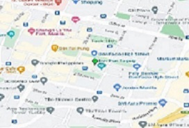
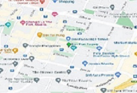

OUR STAFF

To our valued guests,
Salieri’s Fine Dining is currently operating at full capacity for both indoor and outdoor dining in accordance with the ATF resolution.
To prevent lineups, we advise making a reservation for a table in advance.
There are still pick-up and delivery options available.
Please click on the icon below to view our Pick-Up and Delivery Menu.
You can use our online ordering system to place your purchase, and a member of our staff will contact you.
You may also contact us through the following channels:
Facebook: @Sarieli
Instagram: @Sarieli
Operation Hours: 10am - 10pm
Delivery Hours: 10am - 8pm
THE BEST FINE DINING IN THE PHILIPPINES
There's no place like Sarieli's restaurant. Rain or shine, it's time to dine
Delight in every bite with satisfying aroma.
Come sit with us and enjoy the good food and great vibes!
OUR STAFF
24F BGC Corporate Center, 30th Street corner 11th Avenue, Bonifacio Global City, Taguig City, Metro Manila.

 
